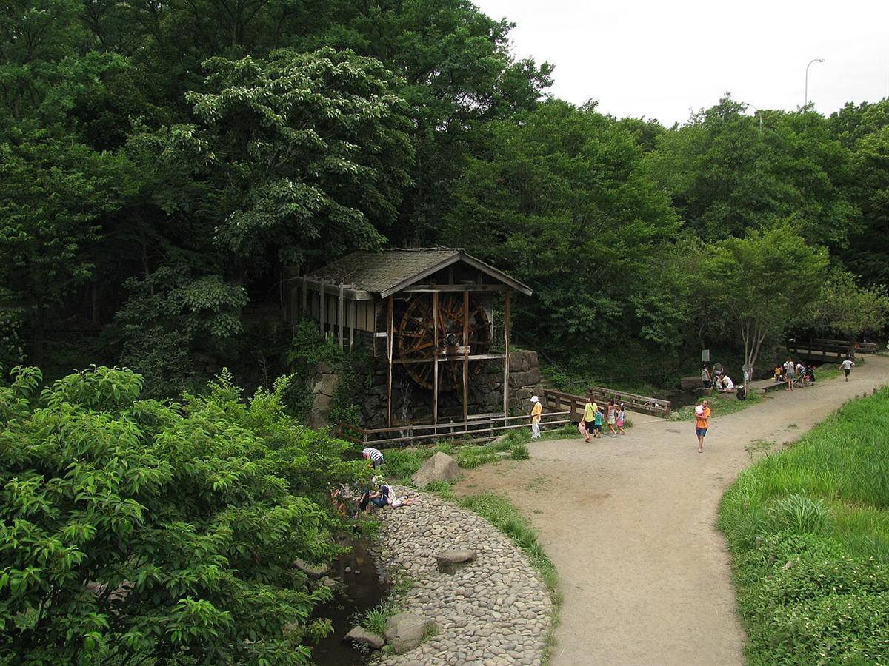

室内・学び大和市
リトルプラネット ハロウィン2026
いつ9/17（木）〜11/1（日）
場所リトルプラネット イトーヨーカドー大和鶴間店3階
対象どなたでも
要確認（施設入場料）予約不要0〜2歳3〜6歳小学生
子連れポイント室内の遊び場なので、雨の日のおでかけ先にも向いています。入場料が必要な施設です。
デジタル技術を使った屋内遊び場のハロウィン企画。おいも掘りのデジタル砂場やボールプールの限定演出が楽しめます。

エリア別
大和市で開かれる子ども・親子向けのイベントを、日付順にまとめています。お祭りや工作体験、公園の自然観察、図書館のおはなし会など、大和市周辺で子どもと出かける先を探すときにどうぞ。
いつ9/17（木）〜11/1（日）
場所リトルプラネット イトーヨーカドー大和鶴間店3階
対象どなたでも
子連れポイント室内の遊び場なので、雨の日のおでかけ先にも向いています。入場料が必要な施設です。
デジタル技術を使った屋内遊び場のハロウィン企画。おいも掘りのデジタル砂場やボールプールの限定演出が楽しめます。
いつ10/31（土）・11/1（日） 10:00〜17:00
場所イオンモール大和 3F イオンホール
対象小学6年生までのお子さま（保護者同伴・親子1組での参加）
子連れポイント保護ゴーグルの着用が必須で体験中は外せない。液体が衣服や髪に付くことがあるため、汚れてもよい服装での参加がすすめられている。
自分で作った「魔法の液体」を使ってお化け屋敷のモンスターを撃退する、工作と体験が一体になったハロウィンイベント。
いつ10/31（土）〜10/31（土） 10:00〜13:00
場所共同カイテックみらいパーク（引地台公園）令和広場
対象どなたでも
子連れポイント人気の消防車体験は混雑・待ち時間が見込まれます。煙体験コーナーは小さな子が怖がることもあるので、内容を見て選ぶとよいでしょう。
はしご車への搭乗撮影や防火服の着用体験、煙・地震の体験コーナーなど、消防・防災をテーマにした体験型イベントです。
いつ10/31（土）〜10/31（土） 13:30〜15:30
場所市内の農場（集合は南林間駅東口ロータリー）
対象市内在住の小学生と保護者（未就学児の同伴不可）
子連れポイント未就学児は同伴できないので、小さいきょうだいがいる家庭は預け先を考えておく必要があります。申込は電子申請のみ・期間限定（10/1〜12）なので忘れずに。
南林間駅集合で市内の農場を見学する親子向け企画です。普段入れない農場で作物の様子などを見られます。
いつ11/1（日） ①12:00〜 ②15:00〜（各回入替制）
場所イオンモール大和 1F ライトコート
対象指定なし（家族で楽しめるショー）
子連れポイント整理券は当日朝から配布されるため、早めの来場がおすすめ。ショー中の撮影・録音は禁止されている。
SNSで人気のマジシャンKENTOさんによる、子どもから大人まで楽しめるマジックショー。
いつ11/1（日） 6回制（10:30/11:10/11:50/13:30/14:10/14:50、各回約20分）
場所イオンモール大和 1F ウォーターコート
対象1歳半〜未就学児（兄弟は小学2年生まで参加可）
子連れポイント保護者の付き添いが必要で、小麦粉アレルギーなどがある場合は参加を控えるよう案内されている。
「工事現場」と「動物」をテーマにした素材や道具に触れながら、五感を使って遊ぶ体験講座。認定講師が進行する。
いつ11/1（日）〜11/1（日） 10:00〜11:30
場所IKOZA 3階 渋谷学習センター 304会議室（大和市渋谷5-22）
対象小学生（2年生以下は保護者同伴）
子連れポイント申込は先着制で、受付開始が開催月前月の第1日曜正午からと決まっています。参加希望なら早めに動くのがおすすめです。小学2年生以下は保護者の同伴が必要です。
毎月第1日曜日に開かれる、小学生向けの将棋教室・対局イベントです。
いつ11/1（日）・11/3（火・祝）・11/11（水） 11/1は14:00〜、11/3は11:00〜、11/11は14:30〜
場所大和市文化創造拠点シリウス 3階 子ども図書館 おはなしのへや
対象子ども向け
子連れポイント予約不要で参加できます。開催時間は日によって異なるので、事前に確認すると確実です。
子ども図書館で行われる月例の絵本読み聞かせ会です。
いつ11/1（日） 14:00〜16:00
場所大和市立図書館（シリウス）
対象小学生が主体、子ども向け
子連れポイント予約不要です。自分で絵本を作ってみたい子におすすめです。
小学生が読み聞かせを行い、参加者でオリジナルの絵本を作るワークショップです。
いつ10/26（月） 10:00〜11:00
場所大和市文化創造拠点シリウス 屋内こども広場
対象親子向け
子連れポイント大和駅直結のシリウス内での開催です。事前予約が必要です。
音楽に合わせて体を動かす、親子で楽しめるリトミックプログラムです。
いつ10/27（火） 10:00〜11:00
場所大和市文化創造拠点シリウス 屋内こども広場
対象乳幼児と保護者
子連れポイント予約不要で参加できます。汚れてもよい服装で行くと安心です。
赤ちゃんや小さな子の手形をとって、記念のアート作品にできる企画です。
いつ10/30（金） 午前10:00〜11:30（保育園児パレード）、午後14:00〜17:00（チェックポイントでお菓子集め）
場所大和駅周辺
対象未就学児〜小学生（保護者同伴）
子連れポイント予約不要で参加できます。仮装して行くと一層楽しめます。
保育園や商店、福祉施設などが連携して行う地域のハロウィン企画。仮装して駅周辺のチェックポイントを回るとお菓子がもらえます。
いつ10/31（土） 10:00〜17:00 （ほかに 11/1 も開催）
場所イオンモール大和 3F イオンホール
対象小学6年生までのお子さま（保護者同伴・親子1組での参加）
子連れポイント保護ゴーグルの着用が必須で体験中は外せない。液体が衣服や髪に付くことがあるため、汚れてもよい服装での参加がすすめられている。
自分で作った「魔法の液体」を使ってお化け屋敷のモンスターを撃退する、工作と体験が一体になったハロウィンイベント。
いつ11/1（日） 10:00〜17:00 （ほかに 10/31 も開催）
場所イオンモール大和 3F イオンホール
対象小学6年生までのお子さま（保護者同伴・親子1組での参加）
子連れポイント保護ゴーグルの着用が必須で体験中は外せない。液体が衣服や髪に付くことがあるため、汚れてもよい服装での参加がすすめられている。
自分で作った「魔法の液体」を使ってお化け屋敷のモンスターを撃退する、工作と体験が一体になったハロウィンイベント。
いつ11/1（日） ①12:00〜 ②15:00〜（各回入替制）
場所イオンモール大和 1F ライトコート
対象指定なし（家族で楽しめるショー）
子連れポイント整理券は当日朝から配布されるため、早めの来場がおすすめ。ショー中の撮影・録音は禁止されている。
SNSで人気のマジシャンKENTOさんによる、子どもから大人まで楽しめるマジックショー。
いつ11/1（日） 6回制（10:30/11:10/11:50/13:30/14:10/14:50、各回約20分）
場所イオンモール大和 1F ウォーターコート
対象1歳半〜未就学児（兄弟は小学2年生まで参加可）
子連れポイント保護者の付き添いが必要で、小麦粉アレルギーなどがある場合は参加を控えるよう案内されている。
「工事現場」と「動物」をテーマにした素材や道具に触れながら、五感を使って遊ぶ体験講座。認定講師が進行する。
いつ11/1（日） （ほかに 11/3・11/11 も開催）
場所大和市文化創造拠点シリウス 3階 子ども図書館 おはなしのへや
対象子ども向け
子連れポイント予約不要で参加できます。開催時間は日によって異なるので、事前に確認すると確実です。
子ども図書館で行われる月例の絵本読み聞かせ会です。
いつ11/1（日） 14:00〜16:00
場所大和市立図書館（シリウス）
対象小学生が主体、子ども向け
子連れポイント予約不要です。自分で絵本を作ってみたい子におすすめです。
小学生が読み聞かせを行い、参加者でオリジナルの絵本を作るワークショップです。
いつ11/3（火・祝） （ほかに 11/1・11/11 も開催）
場所大和市文化創造拠点シリウス 3階 子ども図書館 おはなしのへや
対象子ども向け
子連れポイント予約不要で参加できます。開催時間は日によって異なるので、事前に確認すると確実です。
子ども図書館で行われる月例の絵本読み聞かせ会です。
いつ11/3（火・祝） 10:00〜12:00（30分ごと入替制）
場所大和市文化創造拠点シリウス 3階マルチスペース
対象記載なし
子連れポイント11月3日は文化の日の祝日で混雑が予想されるため、早めの来場がおすすめです。
塗り絵をして缶バッジに加工するワークショップです。「やまとみらいまつり」の一環として開催されます。
いつ11/3（火・祝） 10:30〜12:00
場所大和市文化創造拠点シリウス 1階 光の庭（中庭）前
対象年齢制限なし、どなたでも参加可
子連れポイント入退場自由で短時間から参加でき、小さな子どもでも気軽に立ち寄れる。作った花は後日シリウス中庭に展示される。
毛糸でポンポンを2つ作り、1つは持ち帰り、もう1つは花に見立ててシリウス中庭の展示コーナーに出すワークショップ。
いつ11/6（金） 10:00〜11:30
場所大和市文化創造拠点シリウス 屋内こども広場 多目的室
対象新生児〜乳児期の親子向け（推定）
子連れポイント無料で参加できますが、事前予約が必要です。
屋内こども広場で開かれる、乳児期の親子向け子育て支援プログラムです。
いつ11/8（日） 10:00〜15:30
場所泉の森（大和市自然観察センター・しらかしのいえ集合）
対象自然観察が好きな方向け
子連れポイント開催時間が長めなので、都合に合わせて途中参加・途中退出もしやすい。雨天中止のため当日の天気を確認する。
泉の森ガイド部会による定例の自然観察会で、季節の木々や草花、昆虫などを見ながら園内を散策する。
いつ11/8（日） 10:00〜12:00
場所大和市文化創造拠点シリウス 図書館（4階健康テラス集合）
対象親子向け
子連れポイント図書館の裏側を見られる珍しい機会です。事前申込の有無は公式サイトで確認してください。
図書館の普段は入れないバックヤードなどを親子で見学できるツアー企画です。
いつ11/11（水） （ほかに 11/1・11/3 も開催）
場所大和市文化創造拠点シリウス 3階 子ども図書館 おはなしのへや
対象子ども向け
子連れポイント予約不要で参加できます。開催時間は日によって異なるので、事前に確認すると確実です。
子ども図書館で行われる月例の絵本読み聞かせ会です。
いつ11/11（水） 10:00〜11:00
場所大和市文化創造拠点シリウス 屋内こども広場 多目的室
対象1〜2歳と保護者
子連れポイント人気のプログラムで満員になりやすいため、参加希望なら早めの申込みが安心です。
1〜2歳の子どもと保護者を対象にした工作教室です。10月14日開催分（別日程）は満員になりました。
いつ11/12（木） 10:00〜10:45
場所桜丘駅西口付近（大和市福田1-30-1）
対象市内在住・在勤の0〜6歳児と保護者
子連れポイント定員8組の予約制です。申込開始時刻を過ぎるとすぐ埋まる可能性があるので早めに連絡しましょう。
リズム遊びや絵本の読み聞かせを楽しむ、乳幼児と保護者向けの集まりです。
いつ11/13（金） 10:00〜11:30
場所大和市文化創造拠点シリウス 屋内こども広場 多目的室
対象乳児期の親子向け（推定）
子連れポイント無料で参加できる親子向けプログラムですが、人気が高くすぐ満員になることがあるため早めの申込みがおすすめです。
屋内こども広場で行われる乳児期の親子向け子育て支援プログラムです。
いつ11/15（日） 10:00〜15:00
場所やまと公園ほか（大和市中央1-5-5）
対象0歳〜大人まで幅広く対象
子連れポイント子どもも楽しめるステージやワークショップがあります。詳細は公式Instagramで確認してください。
ワークショップや地元キッズのダンスステージもあるマーケットイベントです。
いつ11/15（日） 13:30〜15:00
場所桜丘学習センター2階202講習室（大和市福田1-30-1、桜ヶ丘駅西口徒歩3分）
対象記載なし（持込みおもちゃ1家庭2点まで）
子連れポイント先着15人までなので早めに行くと安心です。持ち込みは1家庭2点までです。
壊れたおもちゃを直してもらえる、月例のおもちゃ病院です。
いつ11/17（火） 11:00〜15:00 （ほかに 11/18 も開催）
場所イオンモール大和 1F ライトコート
対象主に0〜3歳頃の乳幼児と保護者（どなたでも参加可）
子連れポイント乳幼児連れでも参加しやすい内容を中心に、年齢を問わず参加できるイベント。
地域の子育て支援団体「こども〜る鶴間」が、大和市と協力して開く活動19周年の記念イベント。親子で楽しめる複数の企画が予定されている。
いつ11/17（火） 10:00〜11:00
場所大和市文化創造拠点シリウス 屋内こども広場
対象親子向け
子連れポイント参加費は現金のみ対応です。予約の要否はページに明記がないため、事前に屋内こども広場（046-259-7592）へ確認すると確実です。
音楽に合わせて体を動かす、親子で楽しめるリトミックプログラムの11月開催分です。
いつ11/18（水） 11:00〜15:00 （ほかに 11/17 も開催）
場所イオンモール大和 1F ライトコート
対象主に0〜3歳頃の乳幼児と保護者（どなたでも参加可）
子連れポイント乳幼児連れでも参加しやすい内容を中心に、年齢を問わず参加できるイベント。
地域の子育て支援団体「こども〜る鶴間」が、大和市と協力して開く活動19周年の記念イベント。親子で楽しめる複数の企画が予定されている。
いつ11/18（水） 10:00〜11:00
場所大和市文化創造拠点シリウス 屋内こども広場
対象記載なし
子連れポイント無料で参加できますが、予約の要否は公式ページに記載がありません。事前に施設へ確認すると安心です。
屋内こども広場で体を動かして遊ぶ、無料の親子向けプログラムです。
いつ11/20（金） 10:00〜11:30
場所大和市文化創造拠点シリウス 屋内こども広場
対象親子向け（歩きはじめ期を想定したプログラム）
子連れポイント無料プログラムです。予約の要否が明記されていないため、事前に施設へ確認すると確実です。
歩きはじめ期の親子向けの子育て支援プログラムの11月開催分です。
いつ11/21（土） 10:00〜11:30
場所大和市文化創造拠点シリウス 屋内こども広場
対象記載なし
子連れポイント土曜開催なのでパパも参加しやすい時間帯です。予約の要否は明記がないため事前確認をおすすめします。
パパ・ママと子どもが一緒に体を動かして遊べる、土曜開催の無料プログラムです。
いつ11/24（火） 10:00〜11:00
場所大和市文化創造拠点シリウス 屋内こども広場
対象記載なし
子連れポイント誕生月の子ども向けの記念企画です。参加条件の詳細は施設へ確認すると確実です。
誕生日記念の手形アートを作ってもらえる、屋内こども広場の無料企画です。
いつ11/26（木） 10:00〜11:00
場所つきみ野学習センター1階保育室（大和市つきみ野5-3-5）
対象0〜4歳の乳幼児と保護者
子連れポイント予約不要で参加できます。詳細はつきみ野学習センター（046-275-0088）に確認すると確実です。
0〜4歳の子どもと保護者向けの読み聞かせ会です。
いつ11/27（金） 10:00〜11:00
場所大和市文化創造拠点シリウス 屋内こども広場
対象離乳食期の赤ちゃんと保護者
子連れポイント対象は離乳食期の赤ちゃんです。参加費は現金のみ対応なので当日持参してください。
離乳食の進め方のコツを学べる、赤ちゃん連れ向けの講座です。
いつ9/17（木）〜11/1（日）
場所リトルプラネット イトーヨーカドー大和鶴間店3階
対象どなたでも
子連れポイント室内の遊び場なので、雨の日のおでかけ先にも向いています。入場料が必要な施設です。
デジタル技術を使った屋内遊び場のハロウィン企画。おいも掘りのデジタル砂場やボールプールの限定演出が楽しめます。
いつ10/31（土）〜10/31（土） 10:00〜13:00
場所共同カイテックみらいパーク（引地台公園）令和広場
対象どなたでも
子連れポイント人気の消防車体験は混雑・待ち時間が見込まれます。煙体験コーナーは小さな子が怖がることもあるので、内容を見て選ぶとよいでしょう。
はしご車への搭乗撮影や防火服の着用体験、煙・地震の体験コーナーなど、消防・防災をテーマにした体験型イベントです。
いつ10/31（土）〜10/31（土） 13:30〜15:30
場所市内の農場（集合は南林間駅東口ロータリー）
対象市内在住の小学生と保護者（未就学児の同伴不可）
子連れポイント未就学児は同伴できないので、小さいきょうだいがいる家庭は預け先を考えておく必要があります。申込は電子申請のみ・期間限定（10/1〜12）なので忘れずに。
南林間駅集合で市内の農場を見学する親子向け企画です。普段入れない農場で作物の様子などを見られます。
いつ11/1（日）〜11/1（日） 10:00〜11:30
場所IKOZA 3階 渋谷学習センター 304会議室（大和市渋谷5-22）
対象小学生（2年生以下は保護者同伴）
子連れポイント申込は先着制で、受付開始が開催月前月の第1日曜正午からと決まっています。参加希望なら早めに動くのがおすすめです。小学2年生以下は保護者の同伴が必要です。
毎月第1日曜日に開かれる、小学生向けの将棋教室・対局イベントです。
いつ11/3（火・祝）〜11/3（火・祝） 15:30〜16:45（15:00開場）
場所大和市文化創造拠点シリウス メインホール
対象0歳から入場可（3歳未満は保護者のひざ上なら無料）
子連れポイント0歳からの入場を明言している貴重な無料コンサートですが、抽選制で申込締切が10月15日と近いため早めの応募が必要です。同じ日の午前中には予約不要の缶バッジ作りワークショップもあるので、抽選に外れても楽しめます。
シリウス開館10周年を記念したファミリー向けコンサートです。大和市のイベントキャラクターや沿線鉄道のマスコットも登場し、ヴォーカル・ピアノ・パーカッションの演奏が楽しめます。